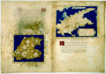

Henricus Martinellus, Insularium. Met een supplement, toegeschreven aan Nicolaus Germanus. Latijn. Handschrift op perkament, 80 ff. (uit de band genomen en als losse dubbelbladen bewaard), 320/330 x 235 mm. Italië, circa 1490. -- (VLF 23)
Het gebruik van het kompas maakte het sinds het einde van de dertiende eeuw mogelijk zeekaarten van een tevoren ongekende nauwkeurigheid te vervaardigen. Deze zogenaamde portolanen lagen sinds de vijftiende eeuw ten grondslag aan de Italiaanse Insularia, de Eilandenboeken. Isaac Vossius (1618-1689), uit wiens bibliotheek dit handschrift afkomstig is, bezat er twee.
Henricus Martinellus, een Duitser, van 1480 tot 1496 werkzaam in Florence, heeft zo’n Insularium op zijn naam staan, waarin onder meer de reis met de ronding van Kaap de Goede Hoop door Bartholomeus Diaz (1485-1487) is verwerkt. Het Leidse exemplaar, dat vermoedelijk wegens vochtschade al lang geleden uit de band genomen is, bevat kaarten van de eilanden van een opmerkelijke precisie; daaraan vooraf gaat een meestal aan een klassieke bron ontleende topografische beschrijving. De twee getoonde kaartjes (folia 43v en 50r) vertonen respectievelijk de berg Athos en Cyprus. De oorsprong uit de portolanen blijkt nog uit de gedetailleerde weergave van de kustlijn en haar visueel aanzicht. Maar ook het binnenland heeft hier al de aandacht.
Literatuur
- K.A. de Meyïer, Codices Vossiani Latini. Leiden 1973-1984 ( = Bibliotheca Universitatis Leidensis. Codices manuscripti. XIII-XVI), t. 1, p. 47-49.
| vorige pagina | top pagina |